Os flashes de tela cheia: hoje × o conceito
13/11 · bloco I, etapa 2 (o item 13 da análise de 14/10) · nada mudou no jogo: a sonda troca os flashes só no navegador, na hora de filmar.
As suas respostas: o alcance é o jogo inteiro (os 21), uma forma por família, os sinais com a cor de hoje em clarão local, e um teto de 3 clarões por segundo.
| família | quais | a forma nova |
|---|---|---|
| impacto | as explosões grandes, a bomba, os clímaxes das cutscenes, o núcleo da F4 | clarão local: a luz acende em volta da explosão, a tela não muda de cor |
| golpe na nave | a perda de casco, o Casco (carta) absorvendo, a morte | vinheta: as bordas acendem, o meio fica legível |
| sinal | "nave armada", as viradas de chefão, a fusão da Serpente | clarão local no dono do sinal, com a cor de hoje |
| largada | a largada das 3 cutscenes, a nave rompendo a atmosfera | tela cheia, com 28% da força e mais curta |
Em cada vídeo, hoje está à esquerda e o conceito à direita, no mesmo instante. Nas tiras, a linha de cima é hoje e a de baixo é o conceito: os 4 quadros a partir do flash (0, 1, 3 e 5 quadros de 1/30 s depois).
Cutscene 1 · a largada, a "nave armada", a cadeia de explosões e a explosão final
A largada (âmbar) → tela cheia fraca
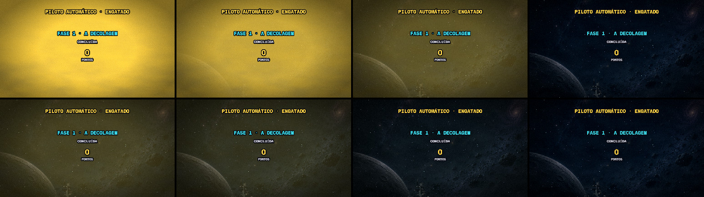
"Nave armada" (ciano) → clarão local na nave
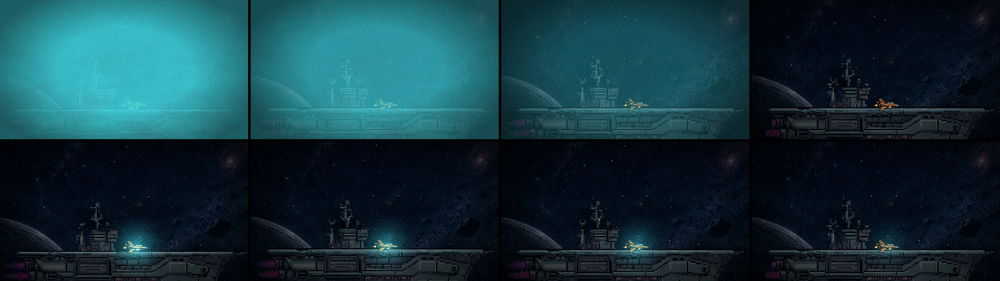
A cadeia de explosões → clarão local, com o teto de 3 por segundo
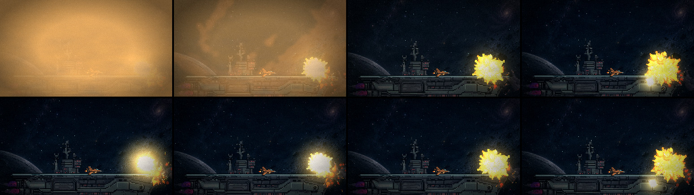
A explosão final da Aurora (hoje, 500 ms de tela creme) → clarão local grande
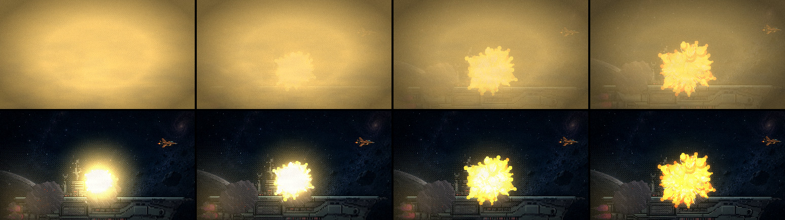
Cutscene 2 · a largada, a "nave armada", a cadeia e a doca explodindo
A cadeia de explosões na doca → clarão local, com o teto de 3 por segundo
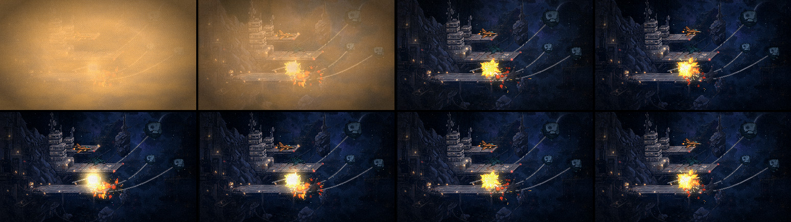
A doca explodindo (hoje, 800 ms de tela laranja) → clarão local grande
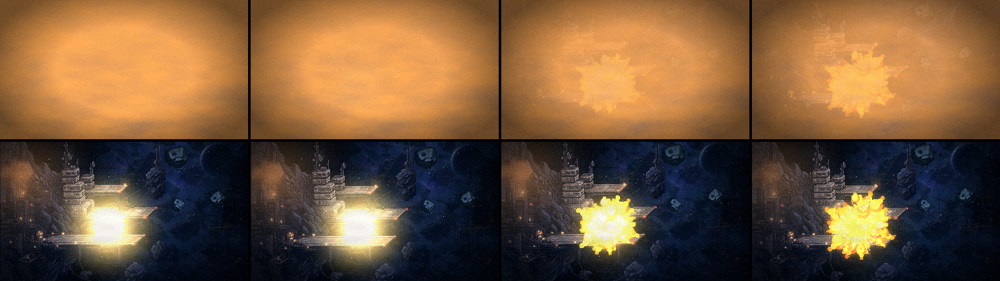
Cutscene 3 · a largada, a "nave armada", o impacto na garganta e o clarão final
O impacto na garganta → clarão local no ponto do impacto
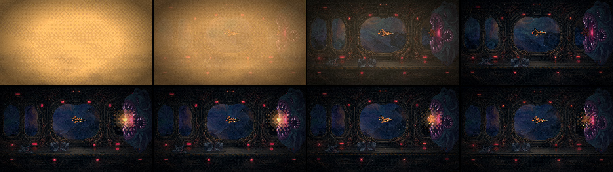
O clarão final (hoje, 700 ms de tela laranja) → tela cheia fraca
Este não tem fonte na tela: a boca já está selada e a cena entrega 0,8 s depois. É pontuação de saída, então vai com a família da largada (o véu fraco), e não com o impacto.
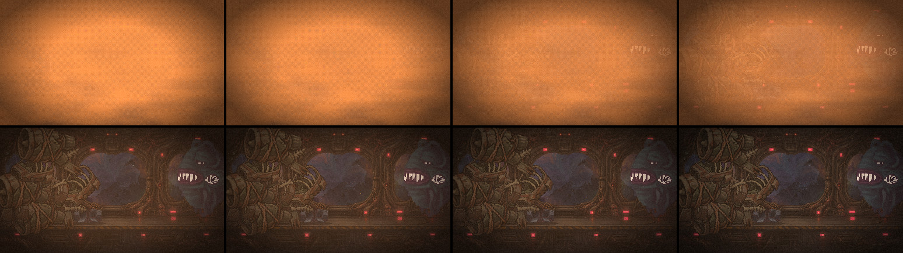
F2 · o golpe na nave (duas perdas de casco e a morte)
A perda de casco (rosa) → vinheta
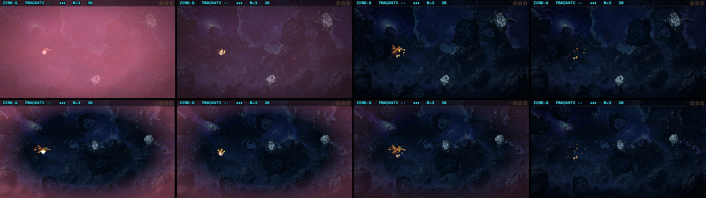
A morte da nave → vinheta
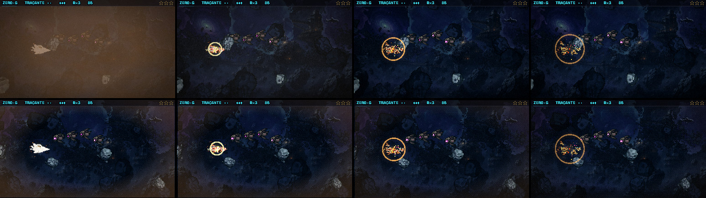
F2 · a bomba e a Capitânia entrando em fúria
A bomba → clarão local
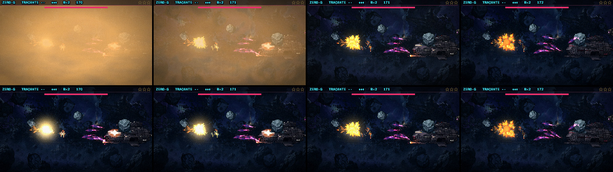
A fúria (magenta) → clarão local no chefão
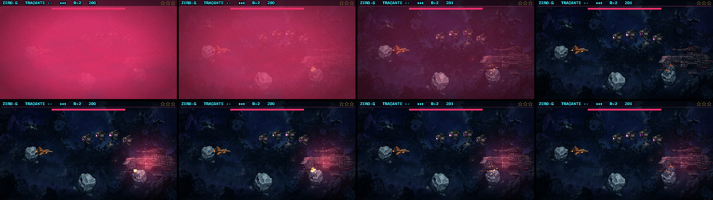
O que eu preciso de você
- O impacto: o clarão local segura o peso da explosão, ou ficou fraco perto do flash de hoje?
- O golpe: a vinheta avisa a tempo que você foi atingido? Ela pode ser mais forte ou mais larga.
- Os sinais: o ciano na nave e o magenta no chefão ainda se leem como "armada" e "fúria"?
- A largada: o véu fraco serve, ou prefere que ela saia de vez?
Não filmados nesta rodada, mas na mesma regra: a fusão da Serpente, a virada da Torre da F1, o núcleo da F4, o Casco (carta) e a atmosfera. A cutscene final (a queda do Leviatã) tem luz de tela cheia feita à mão, fora do flash da câmera: está em aberto. A morte da Capitânia não dispara flash nenhum dentro da janela filmada, então o teste do teto ficou só na cadeia da cutscene 1.